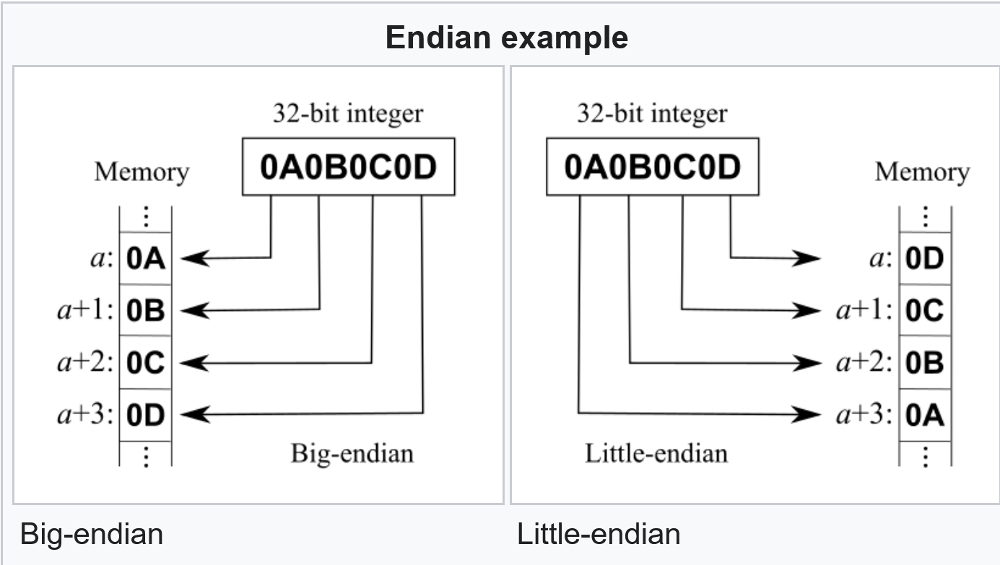

|
|
ParaMonte Fortran 2.0.0
Parallel Monte Carlo and Machine Learning Library
See the latest version documentation. |
|
|
ParaMonte Fortran 2.0.0
Parallel Monte Carlo and Machine Learning Library
See the latest version documentation. |
This module contains constants and procedures that are relevant to bit manipulation.
More...
Variables | |
| logical(LK), parameter | IS_BIG_ENDIAN = iachar(c = transfer(source = 1, mold = "a")) == 0 |
The scalar integer constant of intrinsic default kind that is .true. if and only if the hardware upon which the ParaMonte library is built is a big-endian system.More... | |
This module contains constants and procedures that are relevant to bit manipulation.
Final Remarks ⛓
If you believe this algorithm or its documentation can be improved, we appreciate your contribution and help to edit this page's documentation and source file on GitHub.
For details on the naming abbreviations, see this page.
For details on the naming conventions, see this page.
This software is distributed under the MIT license with additional terms outlined below.
This software is available to the public under a highly permissive license.
Help us justify its continued development and maintenance by acknowledging its benefit to society, distributing it, and contributing to it.
| logical(LK), parameter pm_bit::IS_BIG_ENDIAN = iachar(c = transfer(source = 1, mold = "a")) == 0 |
The scalar integer constant of intrinsic default kind that is .true. if and only if the hardware upon which the ParaMonte library is built is a big-endian system.
In computing, endianness is the order or sequence of bytes of a word of digital data in computer memory.
Endianness is primarily expressed as big-endian (BE) or little-endian (LE):
The following graph schematically illustrates the difference between the big-endian and little-endian systems (credit: Wikipedia).

Registers and endianness
Endianness only makes sense when a multi-byte quantity is broken up into bytes to be stored at consecutive memory locations.
However, if a 32-bit register stores a 32-bit value, it makes no sense to talk about endianness.
The register is neither big-endian nor little-endian; it is just a register holding a 32-bit value.
The rightmost bit is the least significant bit, and the leftmost bit is the most significant bit.
Because it stores its most significant byte at the lowest memory address, the register is sometimes classified as big-endian.
Importance of endianness
Endianness is the attribute of a system that indicates whether integers are represented from left to right or right to left.
Endianness must be chosen every time a hardware or software architecture is designed.
There is not much in the way of natural law to help decide, so implementations vary.
All processors must be designated as either big-endian or little-endian.
For example, the 80x86 (aka, amd64) processors from Intel® and their clones are little-endian.
By contrast, the Sun SPARC, Motorola 68K, and the PowerPC® families are all big-endian.
Why is endianness so important? Suppose you are storing integer values to a file, and you send the file to a machine that uses the opposite endianness as it reads in the value.
This causes problems because of endianness; The values will be read in reverse, that do not make sense.
Endianness is also a big issue when sending numbers over the network.
Again, if you send a value from a machine of one endianness to a machine of the opposite endianness, there will be problems.
This is even worse over the network because you might not be able to determine the endianness of the machine that sent you the data.
Determining the endianness at run time
One way to determine the endianness is to test the memory layout of a predefined constant.
For example, the layout of a 32-bit integer variable with a value of 1 is 00 00 00 01 for big-endian and 01 00 00 00 for little-endian.
By looking at the first byte of the constant, one can tell the endianness of the running platform and then take the appropriate action.
Advantages of different endianness systems
There seems to be no significant advantage in using one method of endianness over the other.
Both are still common and different architectures use them.
Little-endian based processors (and their clones) are used in most personal computers and laptops.
Therefore, the vast majority of desktop computers today are little-endian.
Endian issues do not affect sequences that have single bytes, because byte is considered an atomic unit from a storage point of view.
On the other hand, sequences based on multi-byte are affected by endianness and you need to take care while coding.
Final Remarks ⛓
If you believe this algorithm or its documentation can be improved, we appreciate your contribution and help to edit this page's documentation and source file on GitHub.
For details on the naming abbreviations, see this page.
For details on the naming conventions, see this page.
This software is distributed under the MIT license with additional terms outlined below.
This software is available to the public under a highly permissive license.
Help us justify its continued development and maintenance by acknowledging its benefit to society, distributing it, and contributing to it.
Definition at line 96 of file pm_bit.F90.